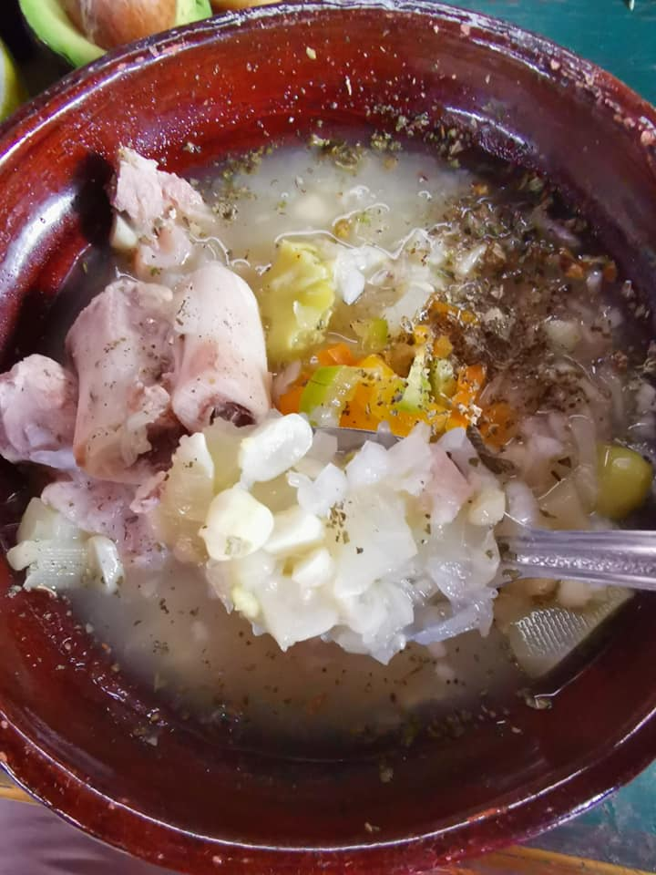
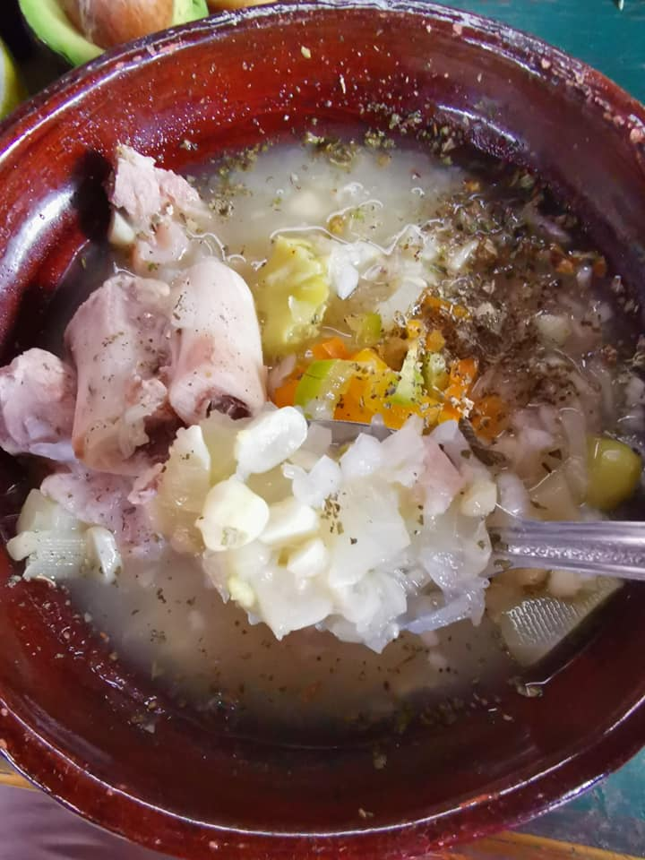
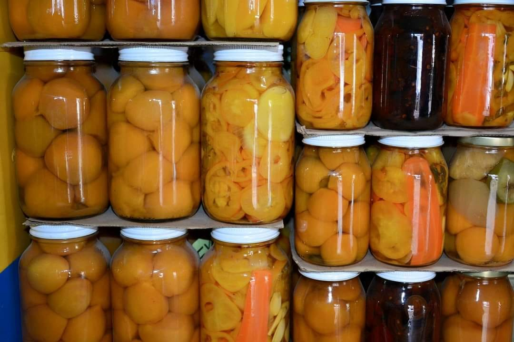
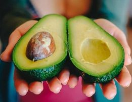
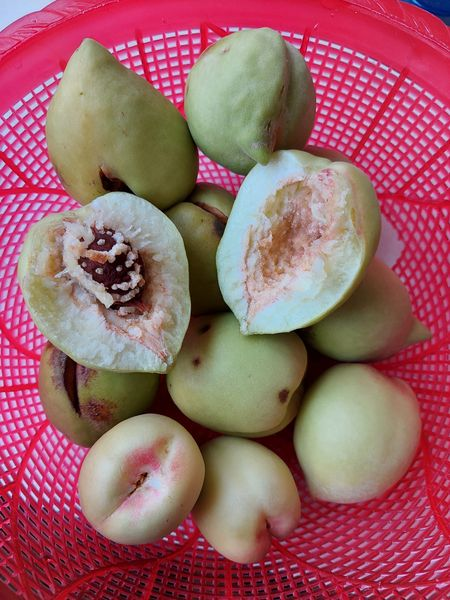

El platillo tradicional de la región se llama pepeto y es elaborado a base de carne de cerdo, chilacayotes picados, granos de elote, habas, cebollas, epazote y chile manzano.
El platillo tradicional de la región se llama pepeto y es elaborado a base de carne de cerdo, chilacayotes picados, granos de elote, habas, cebollas, epazote y chile manzano.
Se llama Duraznos en conserva a los frutos blancos o amarillos cortados generalmente en mitades, maduros, sanos, limpios y sin piel, envasados con agua o con una solución de edulcorantes nutritivos, cerrados herméticamente y sometidos a esterilización industrial.
El Aguacate es fruta y verdura a la vez. Un sabor exquisito y suave a avellana y una consistencia tierna y cremosa permiten su combinación con cualquier alimento. El aguacatero es de hoja perenne y procede originariamente de las zonas tropicales y subtropicales centroamericanas. Los árboles pueden alcanzar una altura de veinte metros, y no dan la fruta antes de los cuatro o siete años de edad.
El Durazno Prisco es una fruta de temporada que sorprenderá al paladar durante el mes de octubre, donde encuentra su punto de maduración. Haciéndolo así más dulce y jugoso, listo para disfrutarse de la manera que más prefieras, ya que gracias a su versatilidad se puede consumir solo, en mermeladas o en postres.
